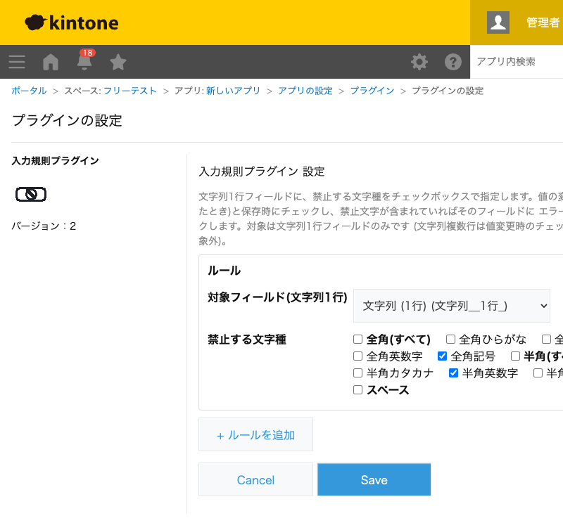

GovAppsプラグイン 安全性を確認できる無料kintoneプラグイン集
電話番号欄に全角数字が混じる、フリガナ欄に漢字が入る、会社名欄に半角カタカナが紛れ込む……。 見た目では気づきにくいこうした文字種の混在は、他システムへの連携時の文字化けや、 検索・並び替えの不具合につながります。このプラグインを使うと、文字列1行フィールドごとに 「禁止する文字種」をチェックボックスで指定でき、該当する文字が入力されるとその場でフィールドに エラーを表示し、保存をブロックできます。個別の文字種(ひらがな・カタカナ・英数字・記号)に加えて、 「全角(すべて)」「半角(すべて)」「スペース」もまとめて選べます(PC・モバイル対応)。
電話番号欄に「全角英数字」を禁止する設定を追加すると、スマートフォンの予測変換等で全角数字が入力されたときにその場でエラーが表示されます。他システムへのCSV連携やSMS送信APIに渡す前に、半角数字だけであることを保証できます。
フリガナ欄に「全角ひらがな」「半角英数字」「全角記号」などを禁止する設定を組み合わせると、全角カタカナ以外の入力(漢字の変換ミス、余計な記号)をその場で防げます。五十音順の並び替えや宛名印刷を安定させたい場合に有効です。
会社名や住所の欄に「半角カタカナ」を禁止する設定を追加すると、うっかり半角入力モードのまま入力してしまったカタカナ(ｶﾀｶﾅ)をその場で検知できます。印刷物や外部システム連携で半角カタカナが原因の文字化けを防ぎたい場合に有効です。
製品コードや型番の欄に「全角(すべて)」と「半角記号」を禁止する設定を組み合わせれば、実質的に半角英数字のみを許可する運用になります。「全角(すべて)」は漢字を含むあらゆる全角文字をまとめて禁止できるため、個別のチェックボックスを1つずつ選ぶ必要がありません。在庫管理システムとのコード連携ミスを防げます。
他の資料からコピー&ペーストした際、前後や単語間に半角・全角スペースが紛れ込んでいることがあります。「スペース」を禁止する設定を追加すると、半角スペース・全角スペースのどちらが混入してもその場でエラーを表示できます。検索・突合の失敗を防ぎたいコード欄・ID欄などに有効です。
対象は文字列1行フィールドのみです(文字列複数行は値変更時のチェックに使うイベントが発火しない仕様のため対象外)。PC・モバイルどちらの画面でも動作します。
kintoneセキュアコーディングガイドラインに沿って実装時にチェックしています。特に重要な点は次のとおりです。
kintone.events.on()、kintone.app.getFormFields()、kintone.plugin.app.getConfig()/setConfig())のみで完結します。record[フィールドコード].errorへのメッセージ代入のみで完結します(kintone標準のエラー表示UIを使うため、任意のHTML注入経路が存在しません)。innerHTMLを使わず、document.createElement()とtextContentのみで行っています。詳細な確認項目・確認日は下記GitHubのチェックリストに全項目を掲載しています。

設定画面・レコード画面のいずれもREST APIを一切使用しません。文字種のチェックはブラウザ内の 正規表現判定のみで完結し、kintoneのAPI実行数にはカウントされません。